Chapter 8: Saving Settings¶
Whenever your app closes, all the data entered, such as any ratings you’ve set or any history you’ve recorded, is lost. For most apps to be useful, they have to persist data between app sessions. Data persistence is a fancy way of saying “saving data to permanent storage”.
In this chapter, you’ll explore how to store simple data using AppStorage and SceneStorage. You’ll save the exercise ratings and, if you get called away mid-exercise, your app will remember which exercise you were on and start there, instead of at the welcome screen.
You’ll also learn about how to store data in Swift dictionaries and realize that string manipulation is complicated.
Data persistence¶
Depending on what type of data you’re saving, there are different ways of persisting your data:
*UserDefaults*: Use this for saving user preferences for an app. This would be a good way to save the ratings.- Property List file: A macOS and iOS settings file that stores serialized objects. Serialization means translating objects into a format that can be stored. This would be a good format to store the history data, and you’ll do just that in the following chapter.
- JSON file: An open standard text file that stores serialized objects. You’ll use this format in Section 2.
- Core Data: An object graph with a macOS and iOS framework to store objects. For further information, check out our book Core Data by Tutorials at https://bit.ly/39lo2k3.
Saving the ratings to UserDefaults¶
Skills you’ll learn in this section: AppStorage; UserDefaults.
UserDefaults is a class that enables storing and retrieving data in a property list (plist) file held with your app’s sandboxed data. It’s called “defaults” because you should only use UserDefaults for simple app-wide settings. You should never store data such as your history, which will get larger as time goes on.
➤ Continue with the final project from the previous chapter or open the project in this chapter’s starter folder.
So far you’ve used iPad in previews. Remember to test your app just as much using iPhone as well. To test data persistence, you’ll need to run the app in Simulator so that you can examine the actual data on disk.
➤ Click the run destination button and select iPhone 12 Pro.
AppStorage¶
@AppStorage is a property wrapper, similar to @State and @Binding, that allows interaction between UserDefaults and your SwiftUI views.
You set up a ratings view that allows the user to rate the exercise difficulty from one to five. You’ll save this rating to UserDefaults so that your ratings don’t disappear when you close the app.
The source of truth for rating is currently in ExerciseView.swift, where you set up a state property for it.
➤ Open ExerciseView.swift and change @State private var rating = 0 to:
@AppStorage("rating") private var rating = 0
The property wrapper @AppStorage will save any changes to rating to UserDefaults. Each piece of data you save to UserDefaults requires a unique key. With @AppStorage, you provide this key as a string in quotes, in this case rating.
➤ Build and run, and choose an exercise. Tap the ratings view to score a rating for the exercise. UserDefaults now stores your rating.
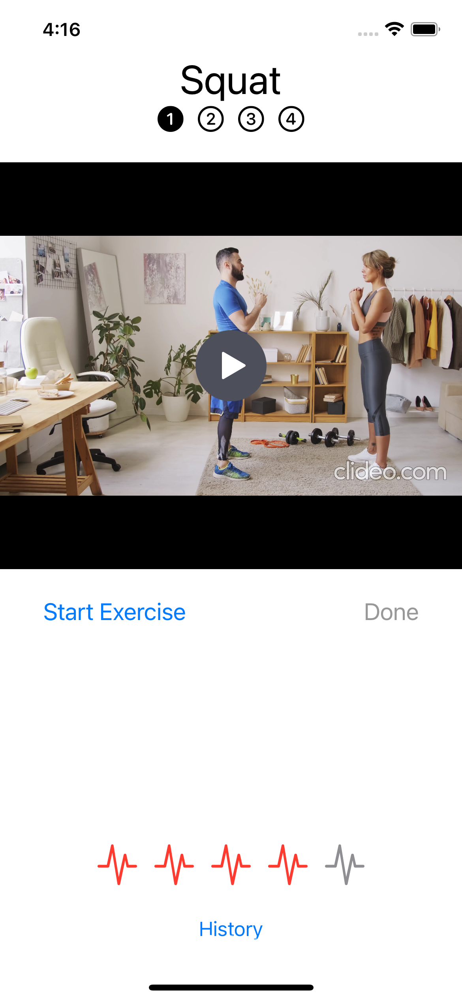
AppStorage only allows a few types: String, Int, Double, Data, Bool and URL. For simple pieces of data, such as user-configurable app settings, storing data to UserDefaults with AppStorage is incredibly easy.
Note: Even though UserDefaults is stored in a fairly secure directory, you shouldn’t save sensitive data such as login details and other authentication codes there. For those you should use the keychain: https://apple.co/3evbAkA.
➤ Stop the app in Simulator, by swiping up from the bottom. Then, in Xcode, run the app again and go to the same exercise. Your rating persists between launches.
Note: When using @AppStorage and @SceneStorage, always make sure you exit the app in Simulator or on your device before terminating the app in Xcode. Your app may not save data until the system notifies it of a change in state.
You’ve solved the data persistence problem, but caused another. Unfortunately, as you only have one rating key for all ratings, you are only storing a single value in UserDefaults. When you go to another exercise, it has the same rating as the first one. If you set a new rating, all the other exercises have that same rating.
You really need to store an array of ratings, with an entry for each exercise. For example, an array of [1, 4, 3, 2] would store individual rating values for exercises 1 to 4. Before fixing this problem, you’ll find out how Xcode stores app data.
Data directories¶
Skills you’ll learn in this section: what’s in an app bundle; data directories; FileManager; property list files; Dictionary
When you run your app in Simulator, Xcode creates a sandboxed directory containing a standard set of subdirectories. Sandboxing is a security measure that means no other app will be able to access your app’s files.
Conversely, your app will only be able to read files that iOS allows, and you won’t be able to read files from any other app.

The app bundle¶
Inside your app sandbox are two sets of directories. First, you’ll examine the app bundle and then the user data.
➤ In Xcode, open the Products group at the bottom of the groups list. When you build your app, Xcode creates a product with the same name as the project.
➤ If your app’s name is in red, build the project to ensure that the compiled project exists on disk.
➤ Control-click HIITFit.app and choose Show in Finder.
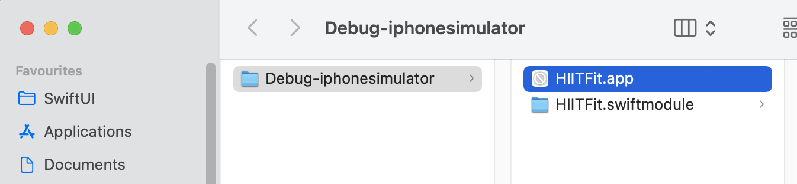
You see here Simulator’s debug directory for the app.
➤ In Finder, Control-click HIITFit and choose Show Package Contents.
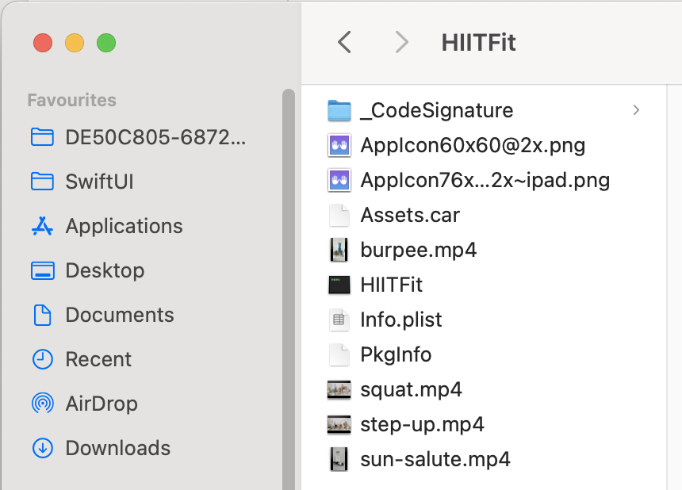
The app bundle contains:
- App icons for the current simulator.
- Any app assets not in Assets.xcassets. In this app, there are four exercise videos.
- HIITFit executable.
- Optimized assets from Assets.xcassets, held in Assets.car.
- Settings files — Info.plist, PkgInfo etc.
The app bundle is read-only. Once the device loads your app, you can’t change the contents of any of these files inside the app. If you have some default data included with your bundle that your user should be able to change, you would need to copy the bundle data to the user data directories when your user runs the app after first installation.
Note: This would be another good use of UserDefaults. When you run the app, store a Boolean — or the string version number — to mark that the app has been run. You can then check this flag or version number to see whether your app needs to do any internal updates.
You’ve already used the bundle when loading your video files with Bundle.main.url(forResource:withExtension:). Generally, you won’t need to look at the bundle files on disk but, if your app fails to load a bundle file for some reason, it’s useful to go to the actual files included in the app and do a sanity check. It’s easy to forget to check Target Membership for a file in the File inspector, for example. In that case, the file wouldn’t be included in the app bundle.
User data directories¶
The files and directories you’ll need to check most often are the ones that your app creates and updates during execution.
The FileManager class¶
You interface with the file system using FileManager. This allows you to do all the file operations you’d expect, such as examine, move, remove and copy files and directories.
➤ Open HIITFitApp.swift and add this modifier to ContentView:
.onAppear {
print(FileManager.default.urls(
for: .documentDirectory,
in: .userDomainMask))
}
Your app will run onAppear(perform:) every time the view initially appears.
Here you use the shared file manager object to list the URLs for the specified directory. There are many significant directories, which you can find in the documentation at https://apple.co/3pTE3U5. Remember that your app is sandboxed, and each app will have its own app directories.
➤ Build and run in Simulator. The debug console will print out an array of URLs for your Documents directory path in the specified domain. The domain here, userDomainMask, is the user’s home directory.
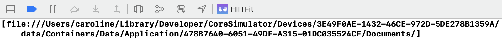
Swift Tip: the result is an array of URLs rather than a single URL, because you could ask for an array of domain masks. These domains could include localDomainMask for items available to everyone on the machine, networkDomainMask for items available on the network and systemDomainMask for Apple system files.
➤ Highlight from /Users.. to /Documents/ and Control-click the selection. Choose Services ▸ Show in Finder.
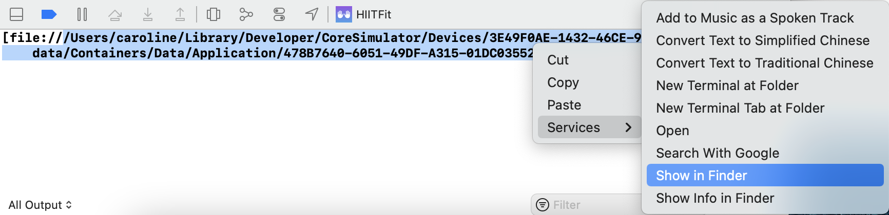
This will open a new Finder window showing Simulator’s user directories:
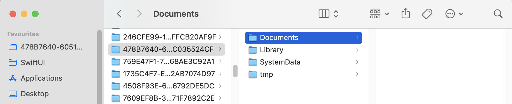
➤ The parent directory — in this example, 47887…524CF — contains the app’s sandboxed user directories. You’ll see other directories also named with UUIDs that belong to other apps you may have worked on. Select the parent directory and drag it to your Favorites sidebar, so you have quick access to it.
In your app, you have access to some of these directories:
- documentDirectory: Documents/. The main documents directory for the app.
- libraryDirectory: Library/. The directory for files that you don’t want to expose to the user.
- cachesDirectory: Library/Caches/. Temporary cache files. You might use this if you expand a zipped file and temporarily access the contents in your app.
iPhone and iPad backups will save Documents and Library, excluding Library/Caches.
Inside a property list file¶
@AppStorage saved your rating to a UserDefaults property list file. A property list file is an XML file format that stores structured text. All property list files contain a Root of type Dictionary or Array, and this root contains a hierarchical list of keys with values.
For example, instead of distributing HIITFit’s exercises in an array, you could store them in a property list file and read them into an array at the start of the app:
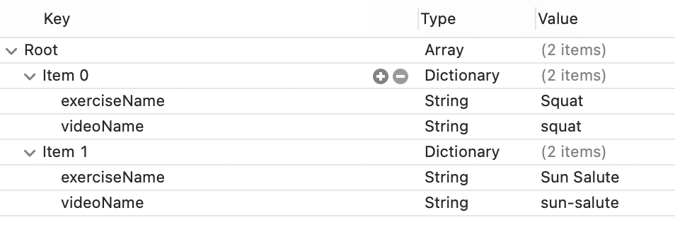
The advantage of this is that you could, in a future release, add an in-app exercise purchase and keep track of purchased exercises in the property list file.
Xcode formats property lists files in a readable format. This is the text version of the property list file above:
<?xml version="1.0" encoding="UTF-8"?>
<!DOCTYPE plist PUBLIC "-//Apple//DTD PLIST 1.0//EN" "http://www.apple.com/DTDs/PropertyList-1.0.dtd">
<plist version="1.0">
<array>
<dict>
<key>exerciseName</key>
<string>Squat</string>
<key>videoName</key>
<string>squat</string>
</dict>
<dict>
<key>exerciseName</key>
<string>Sun Salute</string>
<key>videoName</key>
<string>sun-salute</string>
</dict>
</array>
</plist>
The root of this file is an array that contains two exercises. Each exercise is of type Dictionary with key values for the exercise properties.
Swift Dive: Dictionary¶
A Dictionary is a hash table which consists of a hashable key and a value. A hashable key is one that can be transformed into a numeric hash value, which allows fast look-up in a table using the key.
For example, you might create a Dictionary that holds ratings for exercises:
var ratings = ["burpee": 4]
This is a Dictionary of type [String : Integer], where burpee is the key and 4 is the value.
You can initialize with multiple values and add new values:
var ratings = ["step-up": 2, "sun-salute": 3]
ratings["squat"] = 5 // ratings now contains three items
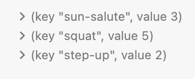
This last image is from a Swift Playground and shows you that dictionaries, unlike arrays, have no guaranteed sequential order. The order the playground shows is different than the order of creation.
If you haven’t used Swift Playgrounds before, they are fun and useful for testing snippets of code. You’ll use a playground in Chapter 24, “Downloading Data”.
You can retrieve values using the key:
let rating = ratings["squat"] // rating = 5
UserDefaults property list file¶
➤ In Finder, open your app’s sandbox and locate Library/Preferences. In that directory, open com.raywenderlich.HIITFit.plist. This is the UserDefaults file where your ratings are stored. Your app automatically created this file when you first stored rating.
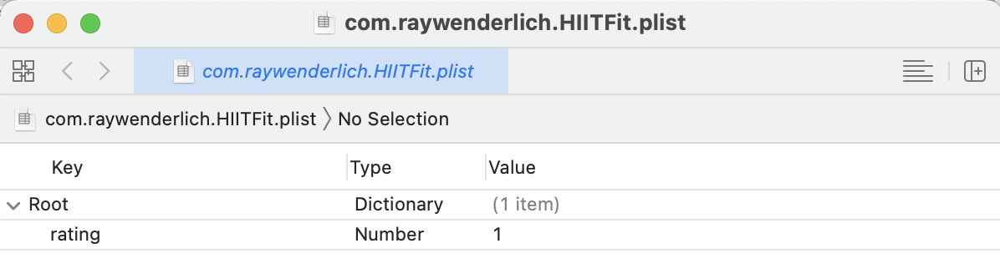
This file has a single entry: rating with a Number value of 1. This is the rating value that can be from one to five.
Property list files can contain:
DictionaryArrayStringNumberBooleanDataDate
With all these types available, you can see that direct storage to property list files is more flexible than @AppStorage, which doesn’t support dictionaries or arrays. You could decide that, to store your ratings array, maybe @AppStorage isn’t the way to go after all. But hold on — all you have to do is a little data manipulation. You could store your integer ratings as an array of characters, also known as a String.
You’ll initially store the ratings as a string of "0000". When you need, for example, the first exercise, you’ll read the first character in the string. When you tap a new rating, you store the new rating back to the first character.
This is extensible. If you add more exercises, you simply have a longer string.
Swift Dive: Strings¶
Skills you’ll learn in this section: Unicode; String indexing; nil coalescing operator; String character replacement
Strings aren’t as simple as they may appear. To support the ever-growing demand for emojis, a string is made up of extended grapheme clusters. These are a sequence of Unicode values, shown as a single character, where the platform supports it. They’re used for some language characters and also for various emoji tag sequences, for example skin tones and flags.

The Welsh flag uses seven tag sequences to construct the single character 🏴. On platforms where the tag sequence is not supported, the flag will show as a black flag 🏴.
A String is a collection of these characters, very similar to an Array. Each element of the String is a Character, type-aliased as String.Element.
Just as with an array, you can iterate through a string using a for loop:
for character in "Hello World" {
print(character) // console shows each character on a new line
}
Because of the complicated nature of strings, you can’t index directly into a String. But, you can do subscript operations using indices.
let text = "Hello World"
let seventh = text[text.index(text.startIndex, offsetBy: 6)]
// seventh = "W"
text.index(_:offsetBy:) returns a String.Index. You can then use this special index in square brackets, just as you would with an array: text[specialIndex].
As you will see shortly, you can also insert a String into another String at an index, using String.insert(contentsOf:at:), and insert a Character into a String, using String.insert(_:at:).
Note: You can do so much string manipulation that you’ll need Use Your Loaf’s Swift String cheat sheet at https://bit.ly/3aGRjWp
Saving ratings¶
Now that you’re going to store ratings, RatingView is a better source of truth than ExerciseView. Instead of storing ratings in ExerciseView, you’ll pass the current exercise index to RatingView, which can then read and write the rating.
➤ Open ExerciseView.swift, and remove:
@AppStorage("rating") private var rating = 0
➤ Toward the end of body, where the compile error shows, change RatingView(rating: $rating) to:
RatingView(exerciseIndex: index)
You pass the current exercise index to the rating view. You’ll get a compile error until you fix RatingView.
➤ Open RatingView.swift and replace @Binding var rating: Int with:
let exerciseIndex: Int
@AppStorage("ratings") private var ratings = "0000"
@State private var rating = 0
Here you hold rating locally and set up ratings to be a string of four zeros.
Preview holds its own version of @AppStorage, which can be hard to clear.
➤ Replace RatingViewPreviews with:
struct RatingView_Previews: PreviewProvider {
@AppStorage("ratings") static var ratings: String?
static var previews: some View {
ratings = nil
return RatingView(exerciseIndex: 0)
.previewLayout(.sizeThatFits)
}
}
To remove a key from the Preview UserDefaults, you need to set it to a nil value. Only optional types can hold nil, so you define ratings as String?, with the ? marking the property as optional. You can then set the @AppStorage ratings to have a nil value, ensuring that your Preview doesn’t load previous values. You’ll take another look at optionals in the following chapter.
You pass in the exercise index from Preview, so your app should now compile.
Extracting the rating from a string¶
➤ In body, add a new modifier to Image:
// 1
.onAppear {
// 2
let index = ratings.index(
ratings.startIndex,
offsetBy: exerciseIndex)
// 3
let character = ratings[index]
// 4
rating = character.wholeNumberValue ?? 0
}
Swift can be a remarkably succinct language, and there’s a lot to unpack in this short piece of code:
- Your app runs
onAppear(perform:)every time the view initially appears. -
ratingsis labeled as@AppStorageso its value is stored in theUserDefaultsproperty list file. You create aString.Indexto index into the string usingexerciseIndex. -
Here you extract the correct character from the string using the
String.Index. - Convert the character to an integer. If the character is not an integer, the result of
wholeNumberValuewill be an optional value ofnil. The two question marks are known as the nil coalescing operator. If the result ofwholeNumberValueisnil, then use the value after the question marks, in this case, zero. You’ll learn more about optionals in the next chapter.
➤ Preview the view. Your stored ratings are currently 0000, and you’re previewing exercise zero.
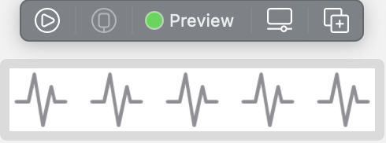
➤ Change @AppStorage("ratings") private var ratings = "0000" to:
@AppStorage("ratings") private var ratings = "4000"
➤ Resume the preview, and the rating for exercise zero changes to four.
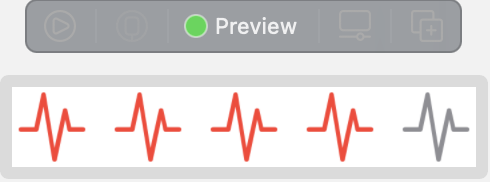
Storing rating in a string¶
You’re now reading the ratings from AppStorage. To store the ratings back to AppStorage, you’ll index into the string and replace the character at that index.
Add a new method to RatingView:
func updateRating(index: Int) {
rating = index
let index = ratings.index(
ratings.startIndex,
offsetBy: exerciseIndex)
ratings.replaceSubrange(index...index, with: String(rating))
}
Here you create a String.Index using exerciseIndex, as you did before. You create a RangeExpression with index...index and replace the range with the new rating.
Note: You can find more information about RangeExpressions in the official documentation at https://apple.co/3qNxD8R.
➤ Replace the onTapGesture action rating = index with:
updateRating(index: index)
➤ Build and run and replace all your ratings for all your exercises. Each exercise now has its individual rating.
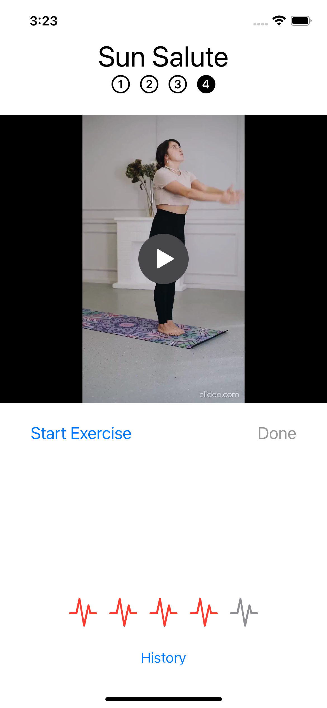
➤ In Finder, examine com.raywenderlich.HIITFit.plist in your app’s Library directory.
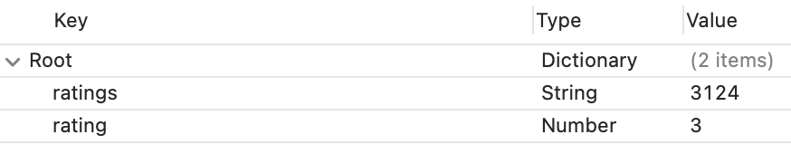
You can remove rating from the property list file, as you no longer need it. The ratings stored in the above property list file are:
- Squat: 3
- Step Up: 1
- Burpee: 2
- Sun Salute: 4
Thinking of possible errors¶
Skills you’ll learn in this section: custom initializer.
You should always be thinking of ways your code can fail. If you try to retrieve an out of range value from an array, your app will crash. It’s the same with strings. If you try to access a string index that is out of range, your app is dead in the water. It’s a catastrophic error, because there is no way that the user can ever input the correct length string, so your app will keep failing. As you control the ratings string, it’s unlikely this would occur, but bugs happen, and it’s always best to avoid catastrophic errors.
You can ensure that the string has the correct length when initializing RatingView.
Custom initializers¶
➤ Add a new initializer to RatingView:
// 1
init(exerciseIndex: Int) {
self.exerciseIndex = exerciseIndex
// 2
let desiredLength = Exercise.exercises.count
if ratings.count < desiredLength {
// 3
ratings = ratings.padding(
toLength: desiredLength,
withPad: "0",
startingAt: 0)
}
}
Going through the code:
- If you don’t define
init()yourself, Xcode creates a default initializer that sets up all the necessary properties. However, if you create a custom initializer, you must initialize them yourself. Here,exerciseIndexis a required property, so you must receive it as a parameter and store it to theRatingViewinstance. ratingsmust have as many characters as you have exercises.- If
ratingsis too short, then you pad out the string with zeros.
To test this out, in Simulator, choose Device ▸ Erase All Contents and Settings… to completely delete the app and clear caches.
In RatingView, change @AppStorage("ratings") private var ratings = "4000" to:
@AppStorage("ratings") private var ratings = ""
When AppStorage creates UserDefaults, it will create a string with fewer characters than your exercise count.
➤ Build and run and go to an exercise. Then locate your app in Finder. Erasing all contents and settings creates a completely new app sandbox, so open the path printed in the console.
➤ Open Library ▸ Preferences ▸ com.raywenderlich.HIITFit.plist. ratings will be padded out with zeros.
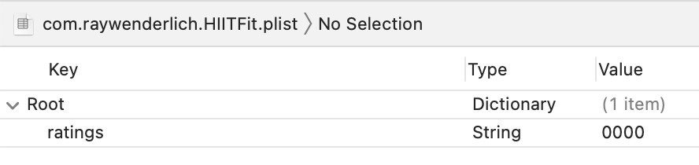
Multiple scenes¶
Skills you’ll learn in this section: multiple iPad windows.
Perhaps your partner, dog or cat would like to exercise at the same time. Or maybe you’re just really excited about HIITFit, and you’d like to view two exercises on iPad at the same time. In iPad Split View, you can have a second window open so you can compare your Squat to your Burpee.
First ensure that your app supports multiple windows.
➤ Select the top HIITFit group in the Project navigator.
➤ Select the HIITFit target, the General tab and, under Deployment Info, locate Supports multiple windows.
➤ Ensure this is checked. When unchecked, you won’t be able to have two windows of either your own app, or yours plus another app, side-by-side.
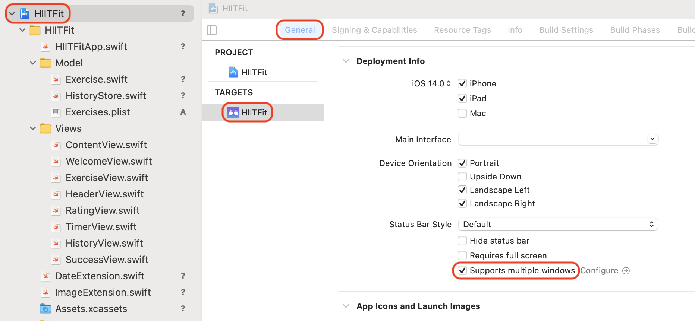
➤ Build and run HIITFit either on your iPad device or in iPad Simulator.
Turn Simulator to landscape orientation using Command-Right Arrow. With the app open, gently swipe up from the bottom edge to reveal the Dock. You’ll see the HIITFit icon in the Dock. Drag this to either the right or left edge of the screen, then drop. You can resize the windows by dragging the divider between the windows.
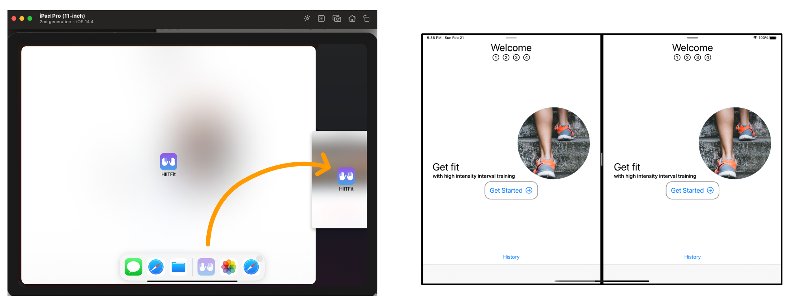
You now have two sessions open.
Making ratings reactive¶
➤ On each window, go to Exercise 1 Squat and change the rating. You’ll notice there’s a problem, as, although the rating is stored in UserDefaults using AppStorage, the windows reflect two different ratings. When you update the rating in one window, the rating should immediately react in the other window.
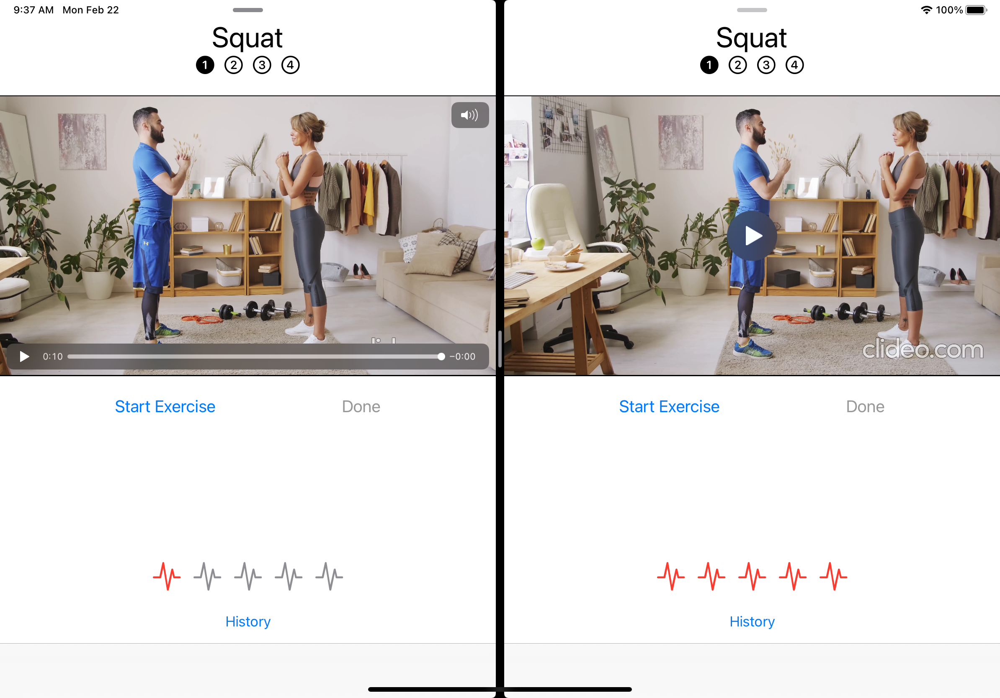
➤ Open RatingView.swift and review the code.
With AppStorage, you hold one ratings value per app, no matter how many windows are open. You change ratings and update rating in onTapGesture(count:perform:). The second window holds its own rating instance. When you change the rating in one window, the second window should react to this change and update and redraw its rating view.
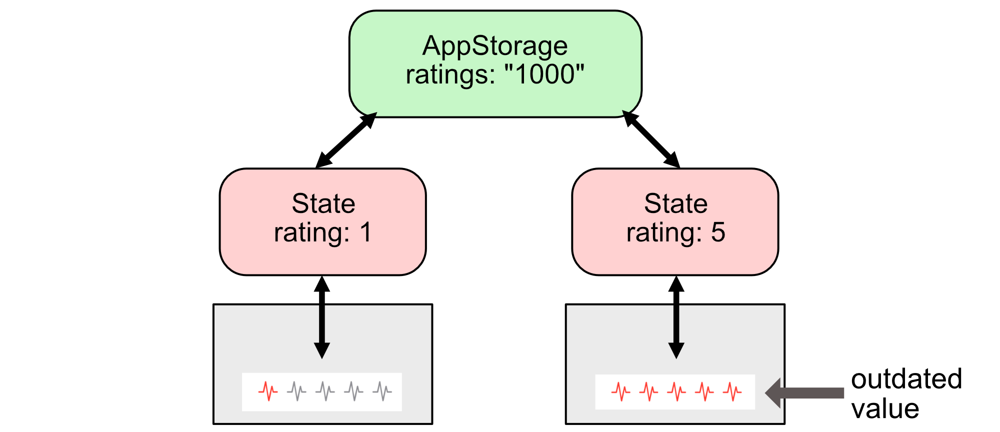
If you were showing a view with the ratings string from AppStorage, not the extracted integer rating, AppStorage would automatically invalidate the view and redraw it. However, because you’re converting the string to an integer, you’ll need to perform that code on change of ratings.
The code that you perform in onAppear(perform:), you’ll add to a new onChange(of:perform:) modifier that will run whenever ratings changes. Instead of duplicating the code, you’ll create a new method, and call the method twice.
➤ In onAppear(perform:), highlight:
let index = ratings.index(
ratings.startIndex,
offsetBy: exerciseIndex)
let character = ratings[index]
rating = character.wholeNumberValue ?? 0
➤ Control-click the highlighted code and choose Refactor ▸ Extract to Method
➤ Name the extracted method convertRating().
Swift tip: Note the fileprivate access control modifier in the new method. This modifier allows access to convertRating() only inside RatingView.swift.
➤ Add a new modifier to Image:
.onChange(of: ratings) { _ in
convertRating()
}
Here you set up a reactive method that will call convertRating() whenever ratings changes. If you were using only one window, you wouldn’t notice the effect, but multiple windows can now react to the property changing in another window.
➤ Build and run the app with two windows side by side. Return to Exercise 1 in both windows and change the rating in one window. The rating view in the other window should immediately redraw when you change the rating.
Apps, Scenes and Views¶
Skills you’ll learn in this section: scenes; @SceneStorage.
You opened two independent sessions of HIITFit in Simulator. If this app were running on macOS, users would expect to be able to open any number of HIITFit windows. You’ll now take a look at how SwiftUI handles multiple windows.
➤ Open HIITFitApp.swift and examine the code:
@main
struct HIITFitApp: App {
var body: some Scene {
WindowGroup {
ContentView()
...
}
}
}
This simple code controls execution of your app. The @main attribute indicates the entry point for the app and expects the structure to conform to the App protocol.
HIITFitApp defines the basic hierarchy of your app, made up of:
- HITTFitApp: Conforms to
App, which represents the entire app. - WindowGroup: Conforms to the
Sceneprotocol. AWindowGrouppresents one or more windows that all contain the same view hierarchy. - ContentView: Everything you see in a SwiftUI app is a
View. Although the SwiftUI template createsContentView, it’s a placeholder name, and you can rename it.
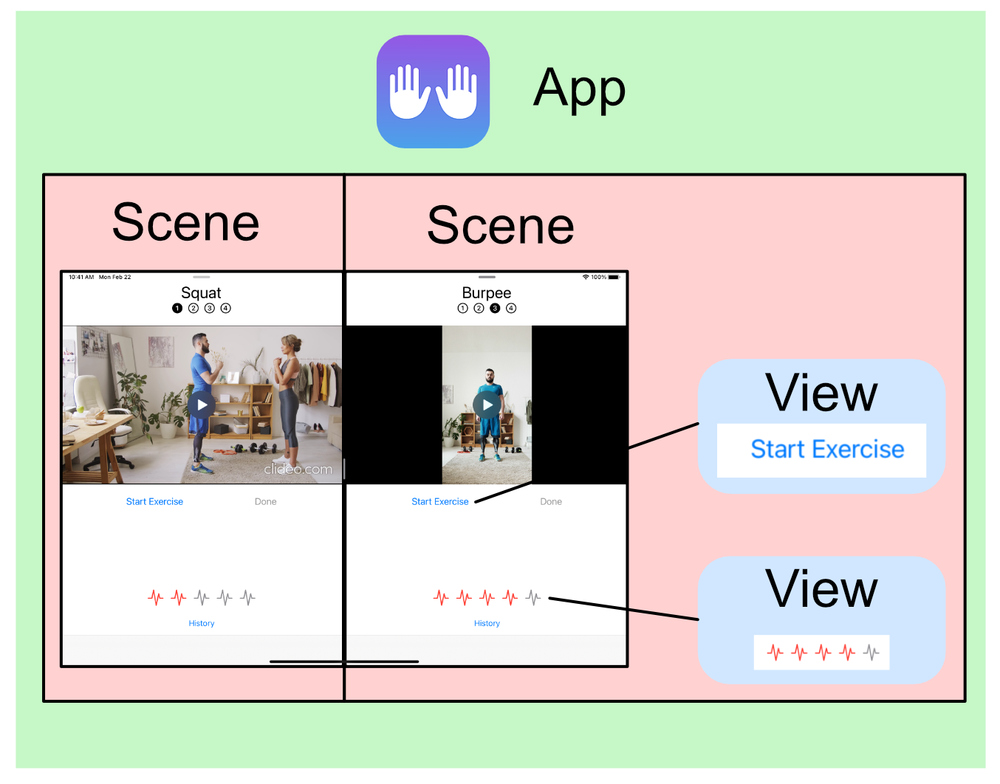
WindowGroup behaves differently depending on the platform. On macOS and iPadOS, you can open more than one window or scene, but on iOS, tvOS and watchOS, you can only have the one window.
Restoring scene state with SceneStorage¶
Currently, when you exit and restart your app, you always start at the welcome screen. This might be the behavior you prefer, but using @SceneStorage, you can persist the current state of each scene of your app.
➤ Build and run your app in iPad Simulator, in two windows, and go to Exercise 3 in the second window. Exit the app in Simulator by swiping up from the bottom. Then stop the app in Xcode. Remember that your app may not save data unless the device notifies it that state has changed.
➤ Rerun the app and, because the app is completely refreshed with new states, the app doesn’t remember that you were doing Exercise 3 in one of the windows.
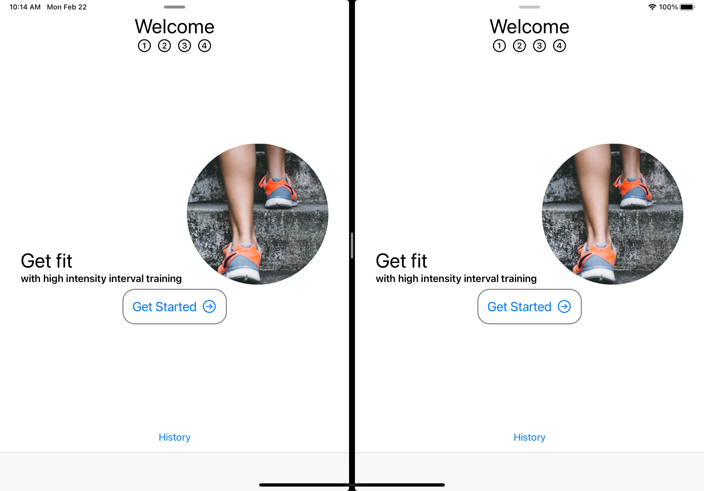
As you might guess, @SceneStorage is similar to @AppStorage. Instead of being persisted per app instance, @SceneStorage properties persist per scene.
➤ Open ContentView.swift.
The property that controls the current exercise is selectedTab.
➤ Change @State private var selectedTab = 9 to:
@SceneStorage("selectedTab") private var selectedTab = 9
➤ Build and run the app. In the first window, go to Exercise 1, and in the second window, go to Exercise 3.
➤ Exit the app in Simulator by swiping up from the bottom. Then, stop the app in Xcode.
➤ Build and run again, and this time, the app remembers that you were viewing both Exercise 1 and Exercise 3 and goes straight there.
Note: To reset SceneStorage in Simulator, you will have to clear the cache. In Simulator, choose Device ▸ Erase All Content and Settings… and then re-run your app.
Although you won’t realize this until the next chapter, introducing SceneStorage has caused a problem with the way you’re initializing HistoryStore. Currently you create HistoryStore in ContentView.swift as an environment object modifier on TabView. SceneStorage reinitializes TabView when it stores selectedTab, so each time you change the tab, you reinitialize HistoryStore. If you do an exercise your history doesn’t save. You’ll fix this in the following chapter.
Key points¶
- You have several choices of where to store data. You should use
@AppStorageand@SceneStoragefor lightweight data, and property lists, JSON or Core Data for main app data that increases over time. - Your app is sandboxed so that no other app can access its data. You are not able to access the data from any other app either. Your app executable is held in the read-only app bundle directory, with all your app’s assets. You can access your app’s Documents and Library directories using
FileManager. - Property lists store serialized objects. If you want to store custom types in a property list file, you must first convert them to a data type recognized by a property list file, such as
StringorBooleanorData. - String manipulation can be quite complex, but Swift provides many supporting methods to extract part of a string or append a string on another string.
- Manage scenes with
@SceneStorage. Your app holds data per scene. iPads and macOS can have multiple scenes, but an app run on iPhone only has one.